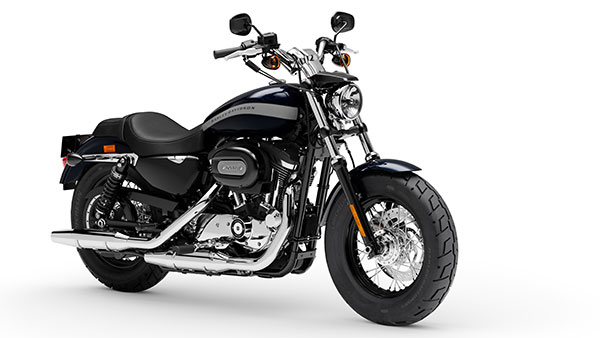

Touring
The category we've created from the ground up. Go the distance, in style. Discover the wide open world and freedom for the soul on bikes only Harley-Davidson could build.


A category created by the venerable Sportster. Iconic design, authentic sound. These are bikes built for carving mountain roads, and blasting through city streets.
The category we've created from the ground up. Go the distance, in style. Discover the wide open world and freedom for the soul on bikes only Harley-Davidson could build.
Where touring becomes detouring, and everything is a road.